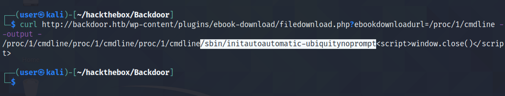
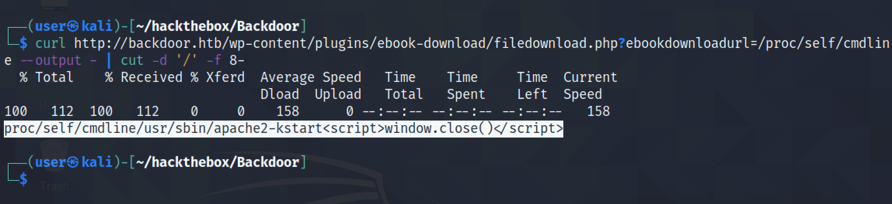

May 7, 2022
Identify Vulnerable Processes Through LFI
In this tutorial, we will see how to exploit a LFI (Local File Inclusion) vulnerability to identify processes running on the system. Normally, people use LFI to read files on the target system. However, it can also be used to list all the processes running on the target which will allow us to identify any vulnerable processes that we can exploit in future.
Let's run a netcat listener and put it in background by pressing Ctrl + Z.

Executing ps -a lists the current processes. We can see that netcat is running with an ID of 1678.
Running cat /proc/[PROCESS_ID]/cmdline shows the command that was used to run the process.
Let's use another example. sleep 60 pauses the terminal for 60 seconds and after that we get the prompt back. There is no need to background this process because it runs for 60 seconds and then it stops running.
ps -a lists the "sleep" process and it is running with an ID of 1776.
Again, let's run cat /proc/[PROCESS_ID]/cmdline to display the command that was used to run this process.
Now that we have an understanding of processes, let's see how we can use this to identify vulnerable processes on a target. In this case, the target is vulnerable to LFI and we can list the contents of any file that we choose. We can see the output of the "/etc/passwd" file.
Trying to access the contents of the current process cat /proc/self/cmdline results in a warning which asks us to add an argument to the command.
Let's run the command again by adding the required arguments. We can see that the command that was used to run the current process on the target was /usr/sbin/apache2 -k start.

We can also list other processes. It shows the first process on the target which in this case is the init process.
The next step is to filter all the irrelevant data from the output. Using cut we can truncate the first part of the output.
We can truncate the last part of the output using sed. Or we could have reversed the output, used "cut" to truncate the last part of the output and then reverse the string once again.
Let's write a shell script that would try to get the commands that were used to run the first 1000 processes.
Let's run the script.
It shows all the commands that were used to run the processes. In this case, the process running gdbserver that is listening on port 1337 is vulnerable.
If you liked reading this article, you can follow me on Twitter: mujtabareads.
- Brute-Force Pins Using wfuzz
- SQL Injection - Example 5
- PHP Type Juggling
- Server Side Template Injection - Example 3
- Server Side Template Injection - Example 2
- Server Side Template Injection - Example 1
- Local File Inclusion (LFI) Attack - Example 1
- SQL Injection - Example 4
- SQL Injection - Example 3
- SQL Injection - Example 2